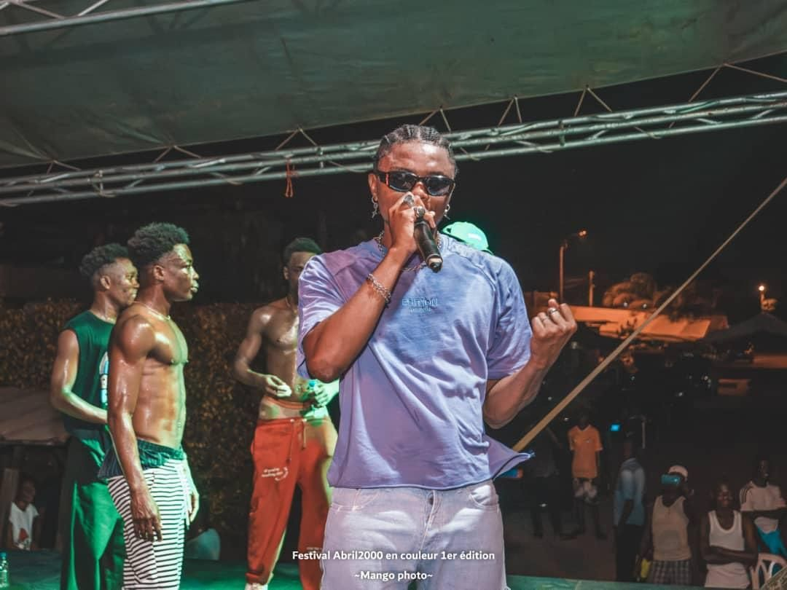
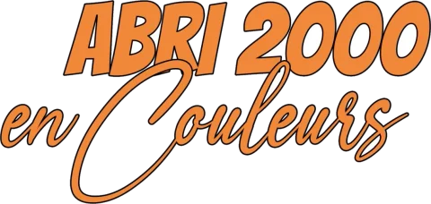
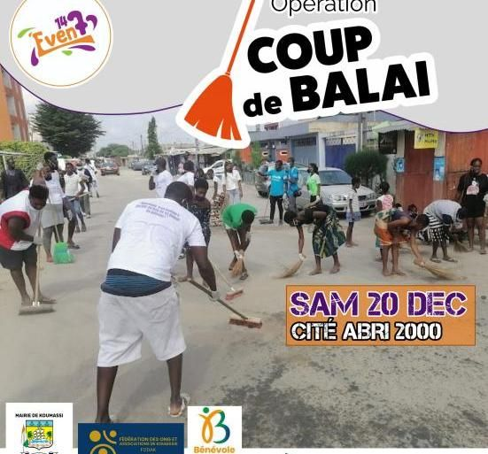
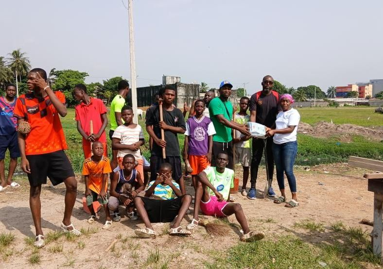
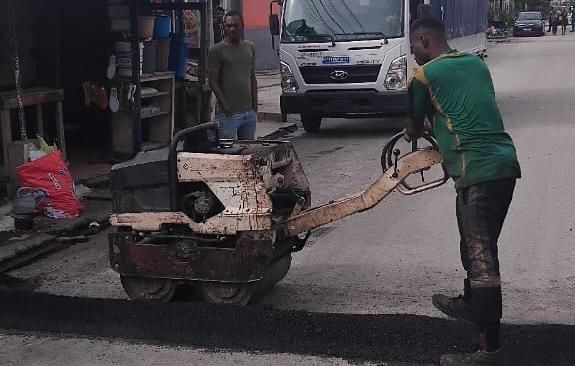

Animation DJ & ambiance wôyô
Les platines tournent pendant les deux jours.
Plus qu’un festival, un véritable rendez-vous de cohésion au cœur de la Cité Abri 2000 de Koumassi.


CultureSolidaritéSportGastronomieDivertissementCohésion sociale
« Allons au 147 »
ABRI2000 EN COULEURS est un festival à portée culturelle et sociale organisé par la structure 147 Event. À travers ses activités, il met en avant la culture ivoirienne sous toutes ses formes, l’importance de la paix et de la cohésion sociale.
Durant ces deux jours, plusieurs activités seront organisées au sein de la cité afin de maintenir toute la cité en attraction et de permettre à tous les festivaliers d’être en activité.
Musique, sport, saveurs, santé et prévention : un programme pensé pour toute la cité, des plus jeunes aux aînés.
Les platines tournent pendant les deux jours.
Des artistes sur la grande scène de la cité.
Finale disputée le vendredi 25 décembre.
Les saveurs de la cité à l’honneur.
Montez sur scène et faites vibrer le public.
Un programme santé ouvert à tous les résidents.
Mieux s’informer sur les réseaux sociaux.
Sur les méfaits de la drogue et de l’alcool frelaté.
Le programme se définit comme suit, du vendredi au samedi, avec un maquis géant chaque soir.
Koumassi, Sci Lagune, Cité Abri2000 (147 logements) Ouvrir dans Google Maps ›
Quelques moments forts des éditions passées : la jeunesse de la cité, les artistes, le dépistage et la randonnée en couleurs au Banco.
Au-delà de son caractère culturel et récréatif, le Festival Abri2000 en Couleurs est une véritable plateforme de mobilisation communautaire. Tout au long de l’année, la jeunesse de la cité s’investit dans des actions citoyennes et sanitaires pour améliorer le cadre de vie des habitants.
Ensemble pour un meilleur avenir !



Annonceur, société, entreprise : rejoignez l’aventure de la troisième édition et rencontrez des milliers de festivaliers.
En retour, votre soutien est valorisé sur nos différents supports de communication et lors des activités du festival. C’est aussi l’occasion de présenter vos produits et activités directement aux festivaliers.
Écrivez-nousRéponse sur WhatsApp au +225 07 47 77 84 53